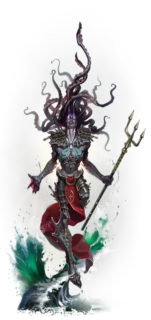

Вестник бури
Storm Herald
Огромная Аберрация, обычно законно-злая

Класс Доспеха 16 (природный доспех)
Хиты 287 (23к12 + 138)
Скорость 50 футов, плавая 100 футов
| мод | спас | ||
|---|---|---|---|
| СИЛ | 27 | +8 | +8 |
| ЛОВ | 14 | +2 | +2 |
| ТЕЛ | 22 | +6 | +6 |
| мод | спас | ||
|---|---|---|---|
| ИНТ | 24 | +7 | +7 |
| МДР | 18 | +4 | +10 |
| ХАР | 18 | +4 | +10 |
Навыки Восприятие +10, Магия +13, Обман +10
Сопротивление урону психическая энергия, холод
Иммунитет к урону звук, электричество
Иммунитет к состояниям испуг, очарование
Чувства тёмное зрение 120 футов, пассивное Восприятие 20
Языки Общий, Великаний, Телепатия 120 фт.
Опасность 17 (18000 опыта)
Бонус мастерства +6
Особенности
Амфибия. Вестник бури может дышать и на суше и в воде.
Сопротивление магии. Вестник бури совершает с преимуществом спасброски от заклинаний и прочих магических эффектов.
Действия
Мультиатака. Вестник бури совершает одну атаку Когтем, одну атаку Щупальцами и одну атаку Трезубцем.
Коготь. . Рукопашная атака оружием: +14 к попаданию, досягаемость 10 футов, одна цель. Попадание: 18 (3к6 + 8) рубящего урона.
Щупальца. . Рукопашная атака оружием: +14 к попаданию, досягаемость 10 футов, одна цель. Попадание: 21 (3к8 + 8) дробящего урон. Если целью является существо Большого размера или меньше, оно становится схваченным (Сл высвобождения 18). Она также считается опутанной и получает 16 (3к10) урона психической энергией в начале каждого своего хода, пока захват не закончится. Вестник может держать в захвате таким образом только одно существо.
Трезубец. Рукопашная атака оружием: +14 к попаданию, досягаемость 10 футов, одна цель. Попадание: 18 (3к6 + 8) колющего урона или 21 (3к8 + 8) колющего урона при использовании двумя руками, плюс 13 (3к8) урона электричеством.
Психическая волна (перезарядка 6). Вестник посылает заряд псионической энергии в разумы до трёх существ, которых он может видеть в пределах 90 футов. Каждая цель должна совершить спасбросок Интеллекта Сл 21. В случае провала цель получает 23 (3к10 + 7) урона психической энергии и становится ошеломлённым на 1 минуту. В случае успеха цель получает половину этого урона. Пораженное существо может повторять спасбросок в конце каждого своего хода, оканчивая на себе действие эффекта случае успеха.
Если этот урон психической энергией уменьшает хиты существа до 0, оно умирает, а его голова, если она у него есть, взрывается.
Использование заклинаний (Псионика). Вестник накладывает одно из следующих заклинаний, используя Интеллект в качестве базовой характеристики и без использования материальных компонентов (Сл спасброска от заклинаний 21):
• Неограниченно: обнаружение магии [detect magic], обнаружение мыслей [detect thoughts], волшебная рука [mage hand] (рука невидима);
• 1/день каждое: власть над водами [control water], власть над погодой [control weather] (накладывается действием), послание [sending].
Описание
Древние и инопланетные существа обитают или дремлют в океанских глубинах, ожидая какого-то космического обстоятельства, которое подаст сигнал к их пробуждению. В своем уединении от мира штормовые великаны иногда попадают на орбиту таких существ, возможно, в поисках понимания какого-то предзнаменования, видения или пророчества. Кракены, аболеты и Великие Древние наслаждаются тем, что склоняют штормовых великанов к себе на службу, превращая их в вестников бури.
У вестника бури отрастают плавники и щупальца, придающие ему монструозный вид. Его разум полностью находится под властью хозяина, а сам он обретает устрашающие псионические способности, которые можно использовать для продвижения планов своего хозяина. Когда вестник умирает, он возвращается к своему прежнему облику.
Вестник бури может попытаться склонить других штормовых гигантов на службу своему хозяину, в то время как другие собирают преданные культы малых существ, чтобы служить монстрам глубин.